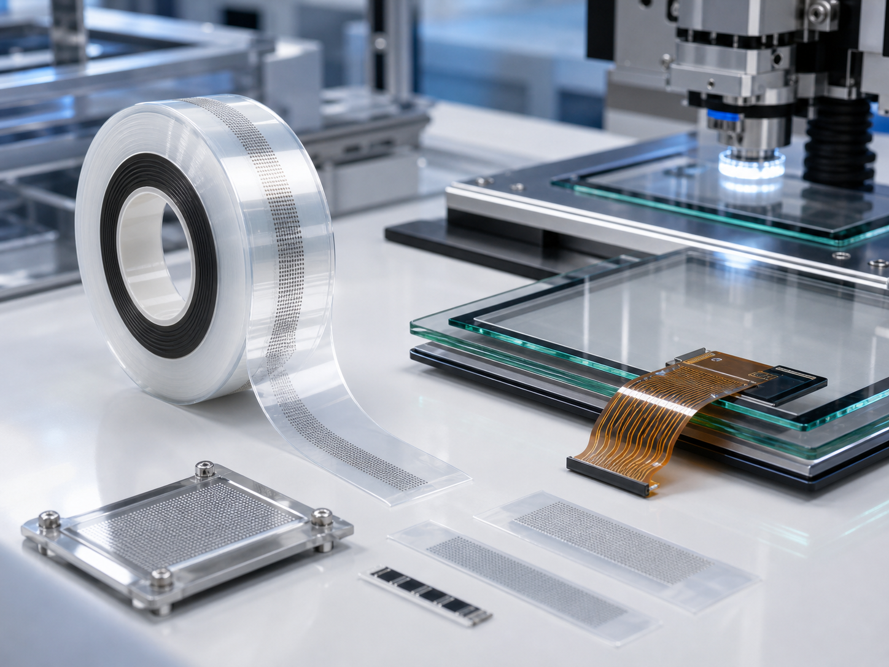

主型号
TOU3010CP-25、TCH8020MP-25、TOU5000ZY1-25、TOU4000AP、TCP7610-25、TSC3050BP、TCH8010MP-25、TSB21001F-35、TGP5552UB-35、TCP7050V、TCP7010V、TGP20520AG、EMA8888ECD-37、TOU2051SA-25。
Telephus ACF
韩国 ACF 材料，适用于细间距互连、COF、FPC、塑料基材和较短粘结时间的 OLB 场景。

TOU3010CP-25、TCH8020MP-25、TOU5000ZY1-25、TOU4000AP、TCP7610-25、TSC3050BP、TCH8010MP-25、TSB21001F-35、TGP5552UB-35、TCP7050V、TCP7010V、TGP20520AG、EMA8888ECD-37、TOU2051SA-25。
TSB21001F-35、TGP20520AG、TOU2050、TSB20522F、TGP20500、TSC22000、TFA22000、TSB2000、TOU3010CP-25、TSC3050BP、TSC3000、TOU3000。
TSC4330AY-18B、TOU5000ZY1-25、TGP5552UB-35、TSC5300、TOU500、TGP5000、TCM5000、TSC5340、TSC5330、TCP7050V、TCP7010V、EMA7870、TCF7040、TCH8020MP-25、TCH8010MP-25、TOU8000、EMA8888ECD-37。
适用于 TFT-LCD 细间距、彩色 STN、EL、COF 和 FPC；具有高粘附性、可靠接触电阻、较好的耐腐蚀性，可用于普通溶剂修复场景。
Ready to quote
联系 黄工，提供结构、型号、胶宽、卷长和应用场景，我们会尽快协助确认。